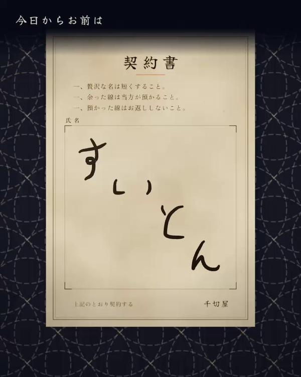
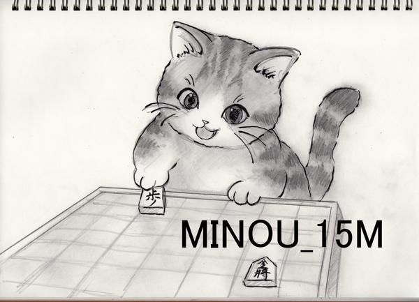
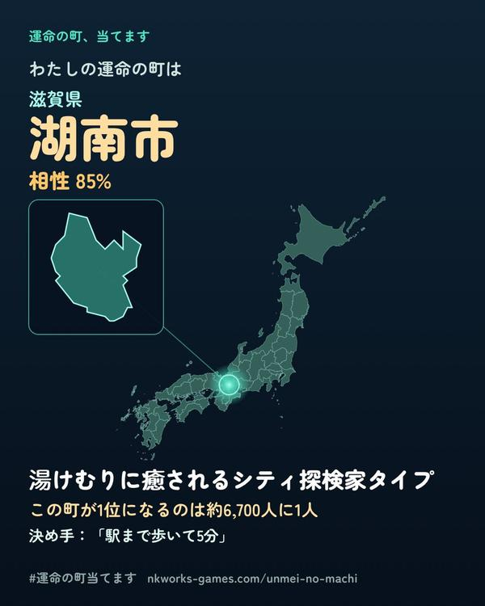
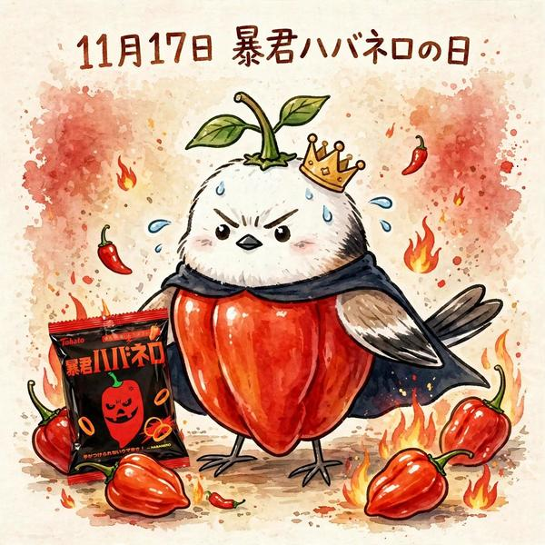

🇯🇵 日本の主要ニュース
🌍 世界の主要ニュース
🤖 AIニュース
💻 PC・ガジェットニュース
🔥 Xのトレンド（日本）
ジャンルで絞らず上位20件を掲載。「未確認」はX上の投稿だけを根拠にしたもので、報道機関による裏付けはありません。
Vライバー配信アプリ「IRIAM」のメンテナンス中に、ライバー同士がつながるためのハッシュタグ企画とみられます。自己紹介画像つきの「フォローしてね」投稿が大量に流れています。
⚠ 未確認（X情報のみ）
ローソンの恒例企画で、値段そのままで商品を約50%増量するキャンペーンが今週始まりました。公式アカウントの「盛りすぎカード」をシェアする参加型投稿が相次いでいます。
出典：Yahoo!ニュース／朝日新聞
マクドナルドの「チキンマックナゲット15ピース」が11月18日から期間限定で490円（通常740円）に。公式アカウントのハッシュタグ企画に参加する投稿が集まっています。
出典：明石じゃーなる／LASISA

「今日から私の名前は『○』です」と、ランダムな名前を付けられるゲーム（#今日からお前は）の結果を共有する投稿が拡散。VTuberやVライバーも多く参加しています。
⚠ 未確認（X情報のみ）

11月17日は「将棋の日」。江戸時代、徳川吉宗が年に一度の「御城将棋」をこの日に制度化したことにちなみます。由来の紹介や将棋のイラストが投稿されています。
出典：東京新聞（記念日の由来）
上の #caengames の名前ゲームの結果「今日から私の名前は…」の投稿が多いため、この言葉もトレンド入りしています。
⚠ 未確認（X情報のみ）
「わたしの運命の町は【○○県○○市】でした。あなたは？」という診断（#運命の町当てます）の結果投稿が広がり、旅先の写真を添えて楽しむ人も。
⚠ 未確認（X情報のみ）
Amazon MGMスタジオが16日、次のジェームズ・ボンド（7代目の007）にロバート・パティンソンを起用すると発表。『トワイライト』『バットマン』のスターの抜擢に反響が広がっています。
出典：BBC／AP

個人作者による「運命の町」診断のハッシュタグ。全国の市町村が結果として出て、「行ったことない町だった」などの反応が並んでいます。
⚠ 未確認（X情報のみ）
ゴンチャのホリデーシーズン限定メニューの一つとみられ、「#ゴンチャの新作」のタグとともに飲んだ感想や写真の投稿が相次いでいます。
出典：ウォーカープラス（ホリデーメニュー）
日本テレビ系「ニノさん」のメンバーが忘年会で集まったとする投稿を番組公式アカウントが取り上げたとみられ、「またテレビで見たい」「SPを」と復活を望む声が広がっています。
⚠ 未確認（X情報のみ）
なにわ男子の西畑大吾さんが、2027年1月スタートのテレビ朝日系オシドラサタデー「僕と彼女の49日」に主演し、初めて“笑わない弁護士”役に挑戦。ヒロインの幽霊役は深川麻衣さん。祝福の声が相次いでいます。
出典：中日スポーツ（Yahoo!ニュース）
11月17日は「レンコンの日」。レンコン料理の写真やイラストが多く投稿されています。
⚠ 未確認（X情報のみ）
なにわ男子の公式YouTubeで「【大橋プレゼンツ】鎌倉デート」が公開され、大橋和也さんと高橋恭平さんの“橋橋”コンビの鎌倉散策に「楽しみ」の声が集まっています。
⚠ 未確認（X情報のみ）
上の動画のタイトルから。大橋和也さんが考えたデートプランに「平和そう」「気になる」との反応が出ています。
⚠ 未確認（X情報のみ）
西畑大吾さんの初の弁護士役（「僕と彼女の49日」）の発表に加え、別ドラマで田中麗奈さんが弁護士役を演じることも話題になっています。
出典：テレビ朝日（番組情報）
パティンソンの007起用を受けた関連トレンド。BBCは新作の公開時期を解説。X上では、映画『トワイライト』で「ボンド…ジェームズ・ボンド」という台詞の直後に彼の演じるエドワードが登場する場面が“予言”として掘り起こされています。
出典：BBC
西畑大吾さんのドラマ主演発表を祝う投稿に加え、西畑さんがブログで中島健人さんの「超☆HENSHIN」を熱く推したとする投稿も見られます（ブログの件はX情報）。
出典：推し楽
サッカーUEFAネーションズリーグで、ドイツが宿敵オランダに5発の大勝で首位突破。フロリアン・ヴィルツが2得点を挙げ、ゴール動画が拡散しています。
出典：DAZN／Yahoo!ニュース

東ハトのスナック菓子「暴君ハバネロ」にちなむ記念日。辛さをネタにしたイラストやキャラクターの投稿が並んでいます。
⚠ 未確認（X情報のみ）
Grok Bot がまとめました。